Демо 1
Разведчик конкурентов
Сначала расспрашивает про ваш бизнес, потом сам находит конкурентов и обходит их сайты. Возвращает разбор: на чём держатся, где дыры, что противопоставить.
Полдня работы руками — за полторы минуты
К концу вебинара вы будете знать, какой процесс отдать помощнику первым и что нажать в понедельник утром. Не теория — каждые восемь минут работающий агент на экране.
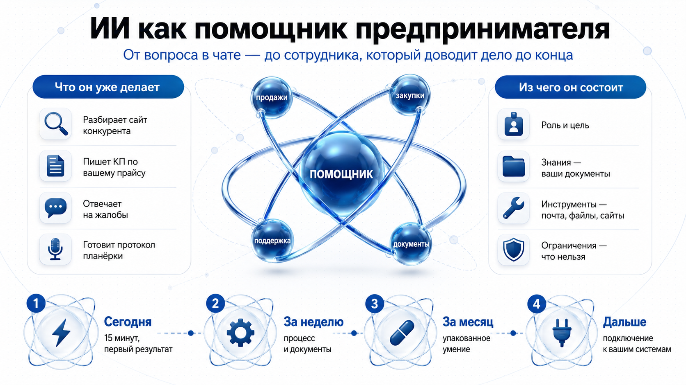
Половина тех, кто пробовал нейросеть и разочаровался, разговаривала с чатом. Чат отвечает на вопрос. Помощник доводит задачу до результата: сам выбирает шаги, сам лезет в ваши документы, сам собирает готовый документ.
Простой тест: если после ответа надо что-то доделывать руками — это был чат.
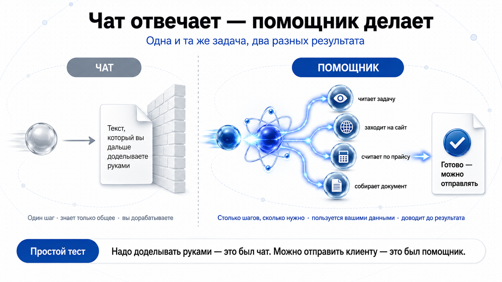
Сколько шагов 🔁
Чат — один. Помощник — столько, сколько нужно, и решает это сам.
Чем пользуется 🧰
Чат — только тем, что знает. Помощник — вашими файлами, почтой, сайтами, таблицами.
Что на выходе 📄
Чат — текст, который вы дорабатываете. Помощник — документ, который можно отправлять.
Где это не работаетПомощник не заменит личный разговор с клиентом, не примет решение о цене и не возьмёт на себя ответственность. Он снимает рутину вокруг решения, а не само решение.
Качество ответа — не везение. Это следствие того, что вы дали помощнику. Шесть частей: роль, цель, инструкция, знания, память, ограничения. Включайте их по одной в конструкторе ниже — и смотрите, как отписка превращается в письмо, которое можно отправить не читая.
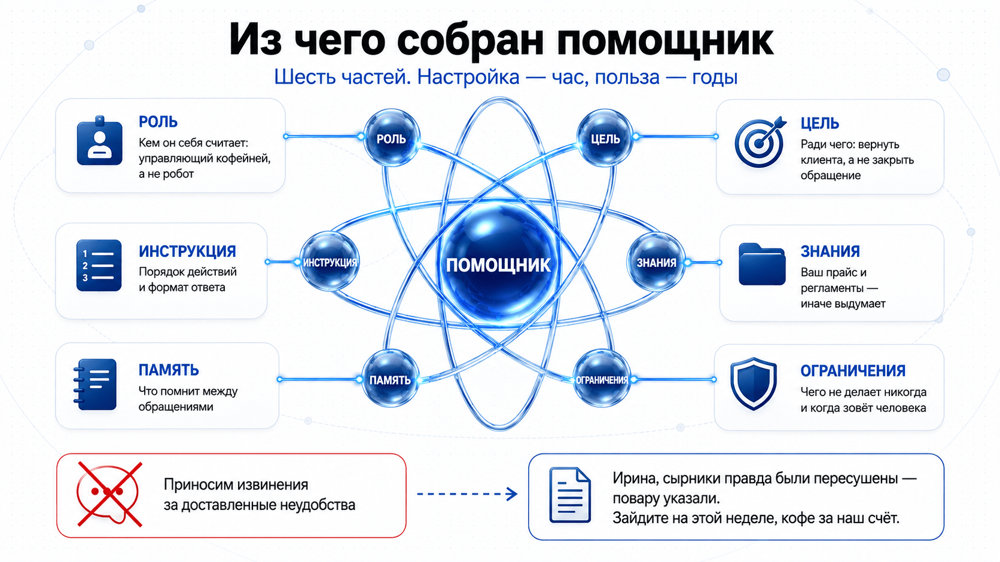
Пропорция, которую стоит запомнить: на настройку уходит час, пользуетесь годами. Час, потраченный на эти шесть пунктов, окупается на третьем клиенте.
РОЛЬ: Ты — [должность] в [чем занимается компания] в городе на [N] тысяч жителей. ЦЕЛЬ: [ради чего ты это делаешь — не «ответить», а «вернуть клиента» / «закрыть заявку продажей»]. ИНСТРУКЦИЯ: 1. [первое действие] 2. [второе действие] 3. [третье действие] Формат ответа: [объём, тон, чего избегать]. ЗНАНИЯ: используй только приложенные файлы — [прайс, регламент, скрипты]. Если данных не хватает — так и скажи, не придумывай. ОГРАНИЧЕНИЯ: - никогда не обещай [скидки, возвраты, сроки], это решаю я; - если клиент требует [X] — передай мне и напиши, что со мной свяжутся; - не выдумывай цены и сроки, которых нет в файлах.
Нейросеть — очень начитанный человек, который никогда не работал в вашей компании. Он прочитал полмиллиона страниц про заборы и ни одной строчки вашего прайса. Когда вы спрашиваете цену, он делает то, что сделал бы вежливый эрудит: называет правдоподобную. Не врёт — достраивает.
Лечится одним способом: дать документы. Приложили прайс — берёт цены оттуда и показывает, из какой строки.
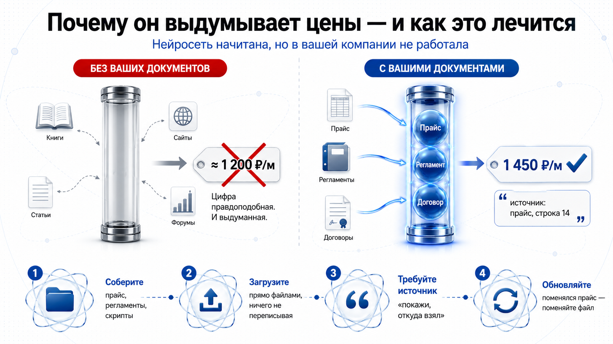
Что загрузить 📁
Прайс, регламенты, скрипты продаж, ответы на частые вопросы, инструкции, договоры-шаблоны.
Ничего не переписывайте ✍️
Загружайте как есть — файлами. У вас всё уже написано, просто лежит в папке, куда никто не заглядывает.
Требуйте источник 🔍
Добавьте в инструкцию «показывай, откуда взял». Проверять станет вчетверо быстрее.
Поменялся прайс 🔄
Просто замените файл. Переучивать ничего не надо — помощник читает актуальную версию.
Что остаётся за человекомЕсли в ваших документах ошибка — помощник её повторит и озвучит уверенным тоном. Он отвечает за поиск в документах, вы — за то, что в них написано.
Инструмент — то, чем помощник умеет пользоваться, кроме собственной головы: поиск, ваша почта, таблицы, календарь, папка с файлами, запись встреч.
До инструментов помощник — консультант по телефону: посоветует, но ничего не сделает. С инструментами он становится сотрудником, у которого есть доступы.
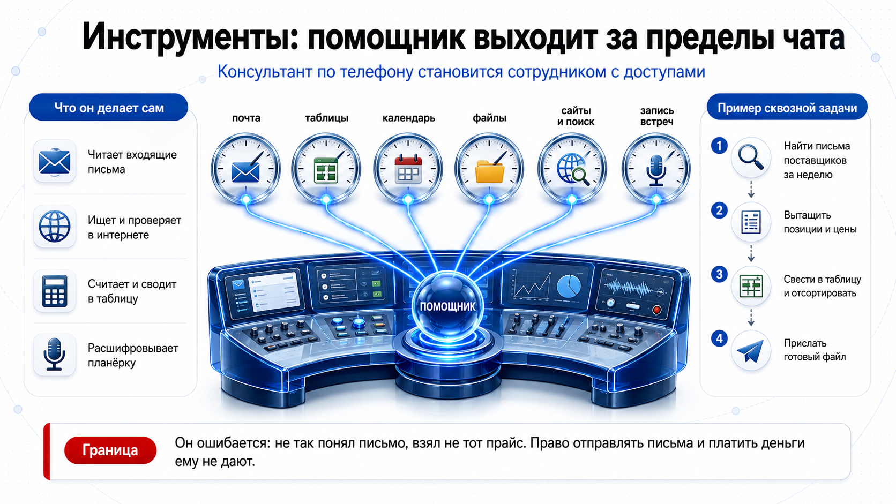
Расшифруй запись совещания и сделай протокол. Формат: 1. РЕШЕНИЯ — что окончательно решили, по пунктам. 2. ЗАДАЧИ — таблица: задача | ответственный | срок. 3. ОТКРЫТЫЕ ВОПРОСЫ — что осталось без решения. 4. СПОРНОЕ — где мнения разошлись и кто что предлагал. Если срок или ответственный не названы явно — пиши «не назначен», не додумывай. Реплики не пересказывай, только результат.
Найди в почте письма от поставщиков за последние 7 дней. Собери таблицу: поставщик | позиция | цена за единицу | срок поставки | условия оплаты | минимальная партия. Отсортируй по цене. Отдельно отметь: - где цена выше средней больше чем на 20%; - где не указан срок поставки; - где условия изменились по сравнению с прошлым письмом. Пришли файлом. Ничего не отправляй поставщикам без моего слова.
ГраницаОн ошибается: не так понял письмо, взял не тот прайс, посчитал не то. Поэтому право отправлять письма клиентам и платить деньги ему не дают. Черновик — ему, кнопка «отправить» — вам.
Один раз описали процесс — дальше вызываете его в два слова. Skill — это обычный текст: когда применять, что делать по шагам, каких ошибок избегать, как выглядит хороший результат. Не программа.
Если вы когда-нибудь писали инструкцию для нового сотрудника — вы уже умеете делать skills. Разница только в том, кто её читает.
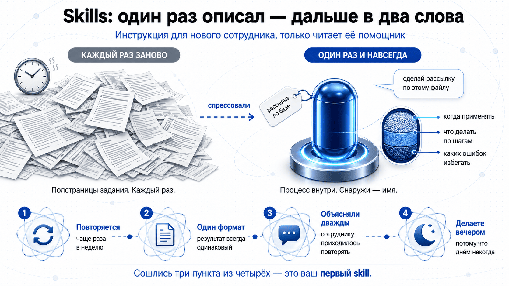
| Уровень | Что это | Аналогия из вашей практики |
|---|---|---|
| Промпт | Разовая просьба | Попросить коллегу сделать что-то один раз |
| Skill | Записанный процесс | Инструкция на стене, к которой сотрудник обращается сам |
| Агент | Роль целиком: знания, инструменты, умения, зона ответственности | Сотрудник на должности |
Что упаковывать первым. Процесс повторяется чаще раза в неделю · результат всегда в одном формате · вы объясняли это сотруднику больше одного раза · вы делаете это по вечерам, потому что днём некогда. Сошлись три пункта из четырёх — это ваш первый skill.
MCP — стандарт подключения помощника к сервисам. Раньше каждое подключение писали руками под конкретную пару «этот ИИ — эта программа»: как если бы к каждой розетке нужен был свой переходник. MCP — общая вилка: сервис сделал разъём один раз, и к нему подключается любой помощник.
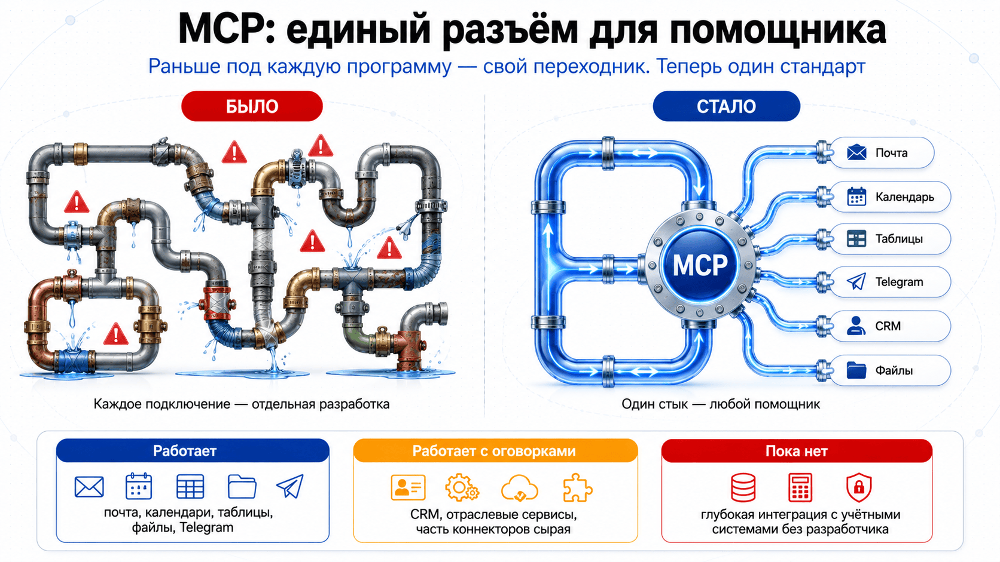
| Статус | Что подключается |
|---|---|
| Работает | Почта, календари, таблицы, файловые хранилища, мессенджеры, поиск по сайтам |
| С оговорками | CRM и отраслевые сервисы — коннекторы есть, но часть сырая, нужен человек с техническими руками |
| Пока нет | Глубокая интеграция с учётными системами без разработчика |
Честно про этот блокЭто самая молодая часть из всего, что вы сегодня видели. Если завтра пойдёте подключать помощника к 1С — понадобится технический специалист. Показываю направление, а не то, с чего начинать.
Главное правило первых двух месяцев: генерация — ему, отправка — вам. Помощник готовит письмо и показывает; кнопку нажимаете вы. Дальше границу можно двигать — но только после того, как увидите сотню его ответов.
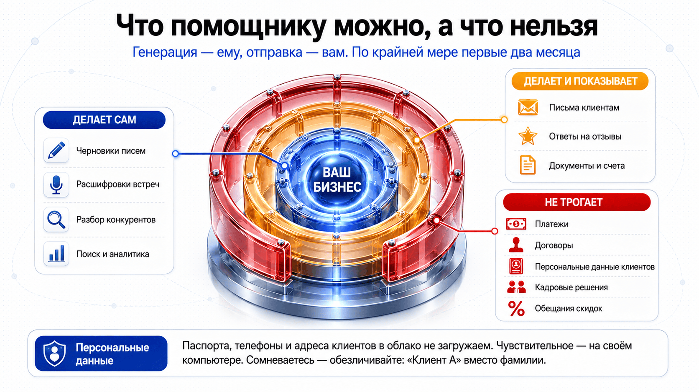
| Зона | Правило | Примеры |
|---|---|---|
| Зелёная | Делает сам | Черновики, расшифровки, разборы конкурентов, поиск, аналитика |
| Жёлтая | Делает и показывает | Письма клиентам, ответы на отзывы, документы и счета |
| Красная | Не трогает | Платежи, договоры, персональные данные клиентов, кадровые решения, обещания скидок |
Какие данные можно отдавать помощнику
«Обезличьте — и грузите» звучит просто, но так это не работает. Данные делятся на три группы, и первая из них не спасается обезличиванием вообще: паспорт остаётся паспортом, даже если замазать фамилию. Разберём по группам — сначала что нельзя никогда, потом что можно после замены, потом что можно как есть.
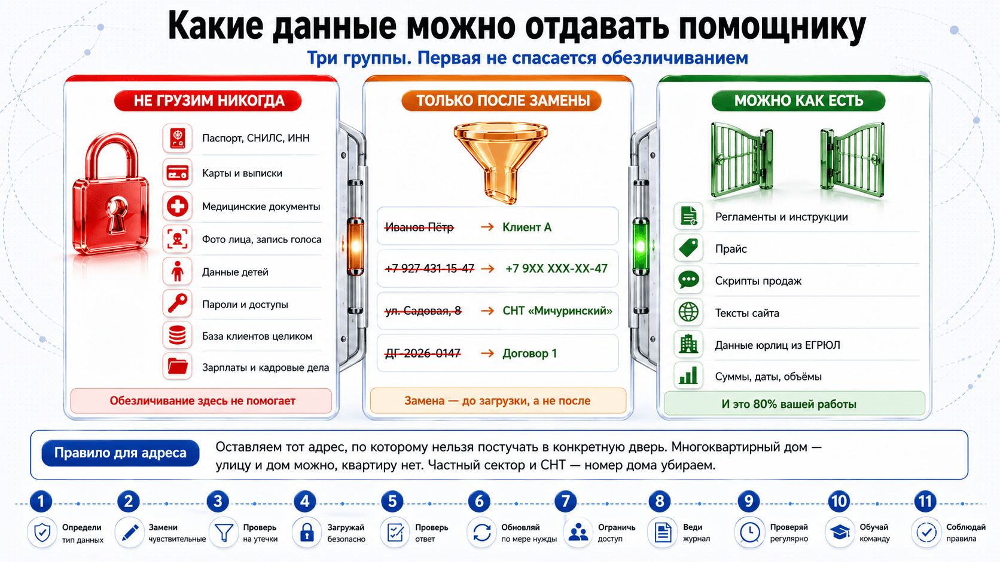
Не грузим никогда
Обезличивание здесь не помогает: эти документы опасны сами по себе, а не именами в них.
Только после замены
Что именно на что менять — в таблице ниже. Замена делается до загрузки, а не после.
Можно как есть
Почти всё, ради чего вы заводите помощника, лежит именно здесь.
Что на что менять
Правило для адреса одно: оставляем тот адрес, по которому нельзя постучать в конкретную дверь. В многоквартирном доме улица и дом такой дверью не являются — квартир там десятки. В частном секторе, ИЖС и СНТ дом — это одно домовладение и одна семья, поэтому номер дома убираем.
| Что | Было | Загружаем | Почему так |
|---|---|---|---|
| Имя | Иванов Пётр Сергеевич | Клиент А | Сотрудников нумеруем так же: «Монтажник 2» |
| Телефон | +7 927 431-15-47 | +7 9ХХ ХХХ-ХХ-47 | Четырёх последних цифр хватает, чтобы узнать своего клиента в записной книжке |
| Телефон, если важен оператор | +7 927 431-15-47 | +7 927 ХХХ-ХХ-ХХ | Либо код, либо последние цифры. Не оба сразу: вместе это 7 цифр из 10 |
| Почта | p.ivanov@mail.ru | клиент_А@почта | Адрес почты часто содержит фамилию целиком |
| Адрес, многоквартирный дом | ул. Ленина, 12, кв. 47 | ул. Ленина, 12 | Дом оставляем, квартиру — никогда |
| Адрес, частный сектор и СНТ | СНТ «Мичуринский», ул. Садовая, 8 | СНТ «Мичуринский» | Здесь дом — это конкретная семья. Номер убираем |
| Индекс | 440026 | 440026 | Можно оставлять: покрывает целый район |
| Номер договора | ДГ-2026-0147 | Договор 1 | По номеру договора вас найдут в вашей же базе |
| Номер автомобиля | Х123УУ58 | Автомобиль клиента | Прямой идентификатор через открытые базы |
| Суммы, даты, объёмы | 157 000 ₽, 12 августа, 60 м | без изменений | Сами по себе человека не называют — их и обсчитывает помощник |
Три вещи, о которых обычно не говорятПервое: обезличивание с ключом — это не обезличивание. Если рядом лежит табличка «Клиент А = Иванов», данные по закону остаются персональными: связь восстановима. Риск утечки вы снижаете, ответственность — нет. Второе: уникальная ситуация называет человека не хуже фамилии. «Клиент А, владелец единственного в городе автосервиса с тремя постами» — вы его только что назвали, и в городе на шестьдесят тысяч это работает жёстко. Третье и главное: локальная модель снимает вопрос целиком. Если данные не уходят с вашего компьютера — как в демо с планёркой, — обезличивать не нужно ничего.
Куда именно грузим — тоже часть решения. Клиент давал согласие на обработку вам, а не сервису в другой стране: отправка туда — это трансграничная передача со своими требованиями. У российских сервисов с серверами в РФ история проще. За утечку персональных данных с 2025 года действуют оборотные штрафы, считающиеся от годовой выручки, — суммы стоит уточнить у юриста, потому что нормы менялись. Основной документ — 152-ФЗ «О персональных данных»; специальные категории и биометрия — его статьи 10 и 11.
Где помощник дороже человекаРазовые задачи, всё, что требует личного контакта, и всё, где ошибка стоит дороже экономии. Процесс, который вы делаете раз в квартал, автоматизировать не надо: настройка съест больше, чем сэкономит.
Порядок нарушать нельзя. Девять из десяти провалов — попытка начать с третьей ступени: подключить к учётной системе, не сделав ни одного рабочего текста.
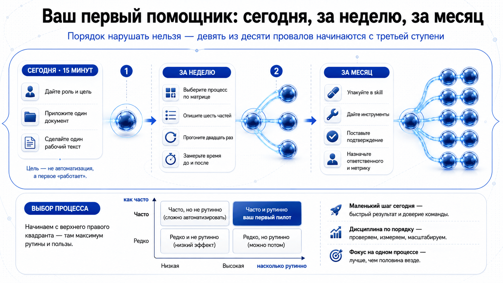
Сегодня · 15 минут ⚡
Откройте помощника, дайте роль, цель и один документ. Сделайте один настоящий рабочий текст. Цель — не автоматизация, а первое «работает».
За неделю ⚙️
Выберите процесс по матрице. Опишите шесть частей. Загрузите документы. Прогоните двадцать раз на реальных задачах и поправьте инструкцию. Замерьте время до и после.
За месяц 📦
Упакуйте в skill. Дайте инструменты. Поставьте подтверждение на жёлтой зоне. Назначьте ответственного и метрику. Только теперь думайте про подключение к системам.
Начните с того, что открывается в браузере без карты. Переходите дальше, только когда упрётесь в конкретное ограничение — а не потому, что где-то написано, что там круче.
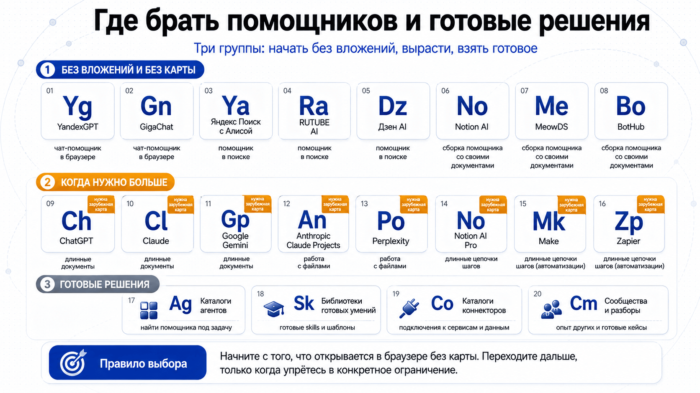
Доступность меняется. Условия работы сервисов в России пересматриваются регулярно. Перед тем как платить, проверьте актуальные условия на сайте самого сервиса — ссылки в карте выше ведут туда.
Ни один из них не программировался — все описаны обычными словами. Пять первых показывались вживую, остальные — по запросу зала. Каждого можно забрать себе: в архиве папка помощника с промптом и шаблонами знаний, но без наших данных — при первом запуске он расспросит про ваш бизнес.
Демо 1
Разведчик конкурентов
Сначала расспрашивает про ваш бизнес, потом сам находит конкурентов и обходит их сайты. Возвращает разбор: на чём держатся, где дыры, что противопоставить.
Полдня работы руками — за полторы минуты
Демо 2
Продавец: заявка → КП
Из сумбурного сообщения в мессенджере делает коммерческое предложение: расчёт по вашему прайсу, три варианта, сроки, вопрос об уточнении.
Сколько заявок вы теряете из-за ответа через два дня?
Демо 3
Рассыльщик персональных писем
Читает список организаций из таблицы, заходит на каждый сайт и пишет письмо со ссылкой на то, что нашёл именно у них.
Тридцать разных писем, а не тридцать копий
Демо 4
Секретарь планёрки
Расшифровывает запись совещания и делает протокол: решения, задачи, ответственные, сроки. Работает на вашем компьютере — запись никуда не уходит.
У всех есть совещания и ни у кого нет протоколов
Демо 5
Агент поддержки
Отвечает на жалобы клиентов. Собирался на глазах зала по частям: роль → цель → инструкция → знания → ограничения.
Видно, как из отписки получается письмо
Резерв
Кадровик-скринер
Разбирает пачку резюме под требования вакансии: кто подходит, кто нет, что уточнить у каждого на собеседовании.
Для города, где нужного человека ищут полгода
Резерв
Закупщик
Собирает предложения поставщиков из почты, сводит в таблицу, сравнивает по цене и срокам, отмечает подозрительные позиции.
Экономия начинается со сравнения, на которое нет времени
Резерв
Финансовый аналитик
Строит модель нового направления: воронка, юнит-экономика, точка безубыточности, окупаемость, три сценария. На выходе — Excel с живыми формулами.
Ответ на вопрос «а посчитать он может?»
Резерв
Контент-фабрика
Из одного описания продукта делает пост, текст для лендинга, скрипт продаж и письмо клиенту.
Для собственника, который сам себе маркетолог
Резерв
Тренажёр переговоров
Отыгрывает трудного клиента по сценарию, затем разбирает диалог по чек-листу и ставит оценку.
Тренировка без риска потерять живого клиента
Отметки сохраняются в браузере — можно закрыть страницу и вернуться после вебинара.
Готово — можно запускать пилот.
Шесть вопросов с разбором. Правильный вариант подсвечивается после ответа — даже если ошиблись.
1. Помощник назвал цену, которой нет в вашем прайсе. Что случилось?
2. Чем помощник-агент отличается от чата с нейросетью?
3. Какой процесс лучше отдать помощнику первым?
4. Что из перечисленного нельзя доверять помощнику?
5. Что такое skill простыми словами?
6. С чего начать в понедельник?
Отвечено: 0 / 6